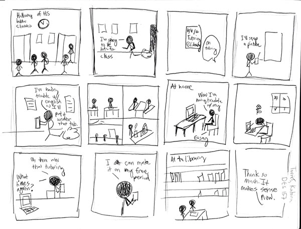
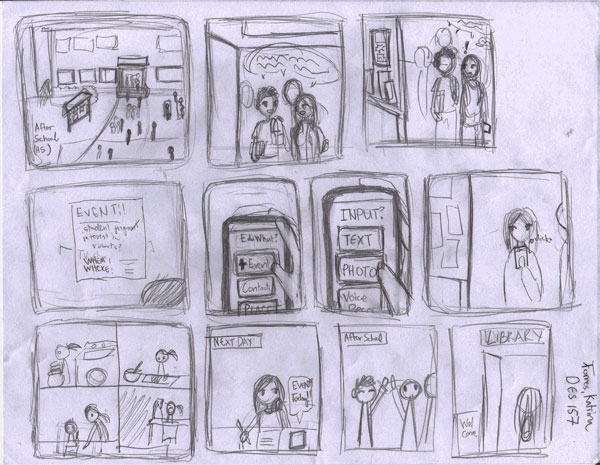

For the first storyboard, I learned that it is better to show rather than tell in the images, what is happening. The first storyboard was meant to be a type of rough draft with stick figures. I also learned that I would need to learn what kinds of programs are avaliable for students from low-income neighborhoods as well as how students learn of this information.
For the second storyboard, I focused on the social aspects of students, and how students don't only have to deal with studying in their everyday lives, but also chores and also family matters. I also learned that how the user navigates the program and navigates it is an important aspect for the project.
